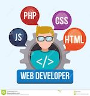

Titre Professionnel Développeur Web et Web Mobile
Marine Vandromme
- 12/2018 - 03/2020
AGENT DE PRODUCTION
Atlantic Billy-Berclau
Montage Assemblage Contrôle qualité
- 03/2018 - 07/2018
AGENT DE FABRICATION INDUSTRIELLE
PSA - Francaise de Mécanique Douvrin
Montage Assemblage Contrôle qualité
- 03/2017 - 08/2017
AGENT DE CONDITIONNEMENT
Eurorol/Cérélia Lièvin
Conditionnement Contrôle qualité
- 06/2015 - 12/2016
AGENT DE FACONNAGE
Délifrance Labeuvrière
Conditionnement Façonnage Contrôle qualité
- Apple Foundation :
Apprentissage du language Swift et SwiftUI
Réalisation d'un projet d'application mobile en groupe
- Codecademy et Open Classrooms :
Sites webs pour l'apprentissage des différents languages.
Proposants des cours, des projets de mise en pratique, des quizz.
- 12/2020 - 10/2021
TITRE PROFESSIONNEL DEVELOPPEUR WEB ET WEB MOBILE
ID Formation Lens
- 10/2017 - 01/2018
AGENT DE FABRICATION INDUSTRIELLE
AFPA Lièvin
- 09/2011-06/2014
BACCALAUREAT PROFESSIONNEL DE SECRETARIAT
Lycée Carnot Bruay-la-Buissière